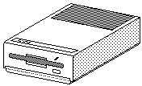

Previous
Next
TOC

Ersatzteil-Teilebezeichnung
SF314/354 Die externen Diskettenlaufwerke
C070094-3
= Power Supply Unit
C070219-001
= Floppydisk Drive Fa.
Epson (SF354)
C070314-001
= Floppydisk Drive Fa.
Epson (SF314)
C070592-001
= Floppydisk Drive Fa,
Chinon (SF354, 6ms steprate)
C070593-001
= Floppydisk Drive Fa.
JVC (SF354, 6ms steprate)
C070350-001
= Floppydisk Drive Fa.
Mitsumi/
TDK (SF314)
C070353-001
= Floppydisk Drive Fa.
JVC (SF314)
c070139-002
= Floppy-Cable SF354/314
Die internen Diskettenlaufwerke
C070350-002
= Floppy Drive 720KB (
TDK)
1040STF/STFM
Jumpertable: DS
0/1 = kein Jumper!
C103043-001
= Floppy Drive 720KB (
Epson SMD-400/SMD480L)
1040ST
Jumpertable: DS (0)/1 = 0 ist gesteckt!
C103043-001
= Floppy Drive 720KB (
Epson SMD-480L/SMD480L)
1040ST/Mega
Jumpertable: DS (0)/1 = 0 ist gesteckt!
= Floppy Drive 720KB (
Epson SMD-380-110)
1040ST/Mega
Jumpertable: * * * * *-* *
* * * * * * *
= Floppy Drive 720KB (
Epson SMD-380-101-05)
1040ST/Mega
Jumpertable: * * * * *-* *
* * * * * * *
C103558-001
= Floppy Drive 720KB (
Epson SMD-380-101)
1040ST/Mega
Jumpertable: * * * * *-* *
* * * * * * *
C103558-003
= Floppy Drive 720KB (
Epson SMD-380-101-06)
1040ST/Mega
Jumpertable: * * * * *-* *
* * * * * * *
C103558-101
= Floppy Drive 720KB (
Epson SMD-380-103-01)
Stacy(Laptop)
Jumpertable: * * * * *-* *
* * * * * * *
F‹R ALLE EPSON SMD-380/400/480/480L LAUFWERKE GILT:
Die entsprechenden Felder sind auf meinem Datenblatt mit Nummern
anstelle von Buchstaben gekennzeichnet: links unten (die Seite,
wo der Spannungsanschlufl ist) ist 1, darÅEer liegt 8. Rechts un-
ten (Seite, auf welcher der Shugart-Bus ist) ist 7, darÅEer liegt
14. Also etwa so:
______
8
14
______________________
|....|
.......
|
|
------
.......
|
|
1
7
----------------------
weiterbl‰ttern
Kapitel Die Diskettenlaufwerke des ATARI, Seite 1